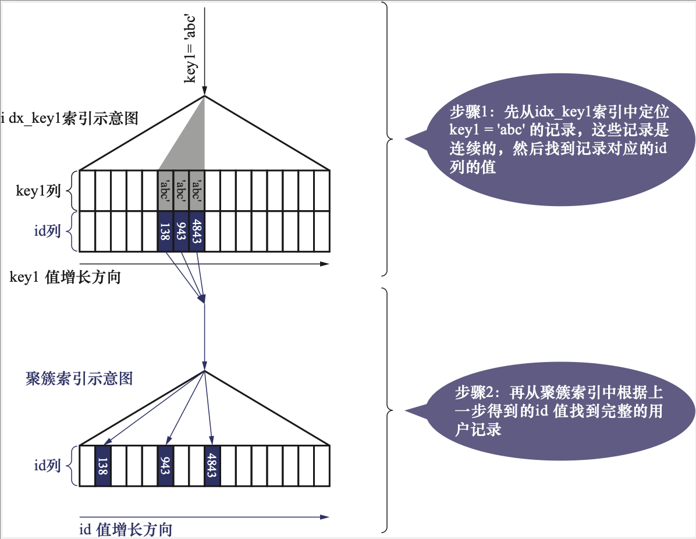

单表访问方法 -《MySQL是怎样运行的》ch10
Ch10 条条大路通罗马——单表访问方法
创建这样一张表格
1 | CREATE TABLE single_table ( |
10.1 访问方法的概念
MySQL执行查询语句的方式称为访问方法或者访问类型。
同一个查询语句可以使用多种不同的访问方法来执行，查询结果都是一样的，但是执行花费的时间成本会相差非常多
10.2 const
有时候通过主键定位一条记录
SELECT * FROM single_table WHERE id = 1438;
MySQL会直接利用主键值在聚簇索引中定位对应的用户记录

类似的，根据唯一二级索引定位一条记录的速度也是非常快的
SELECT * FROM single_table WHERE key2 = 3831;
这个查询的执行分为下面两步
- 在uk_key2对应的B+树索引中，根据key2列与常数的等值比较定位到一条二级索引记录
- 根据该记录的id值到聚簇索引中获取完整的用户记录
通过主键或者唯一二级索引索引列与常数的等值比较来定位记录的速度非常快
这种访问方法被定义为const，意味常数级别，代价可以忽略不计
另外，对于唯一索引，查询列值为NULL时候，情况比较特殊，因为不限制NULL值的数量，可能访问到多条，所以不可以使用const访问方法执行
SELECT * FROM single_table WHERE key2 IS NULL;
10.3 ref
将某个普通的二级索引列与常数进行等值比较，
SELECT * FROM single_table WHERE key1 = 'abc';
这种使用二级索引执行，形成的扫描区间为单点扫描区间，这种访问方法称为ref
因为通过索引列进行等值比较后可能会匹配到多条二级索引记录，所以ref访问方法比const差了一点
两个注意点：
二级索引列允许NULL值的时候，如果索引不限制NULL值的数量，执行’key IS NULL’，最多只能使用ref访问方法
对于联合索引，只要最左边连续的列是与常数进行等值比较，就可以采用ref访问方法，如
SELECT * FROM single_table WHERE key_part1 = 'god like';SELECT * FROM single_table WHERE key_part1 = 'god like' AND key_part2 = 'legendary';
10.4 ref_or_null
不仅查找等于常数，而且找出NULL的记录
SELECT * FROM single_table WHERE key1 = 'abc' OR key1 IS NULL;
当使用二级索引执行该查询，使用的访问方法就是ref_of_null
这种访问仅仅比ref访问方法多了一些值为NULL的记录，效率稍逊一筹
值为NULL的记录会被放在索引的最左边
10.5 range
当需要查找范围的记录时候，例如
SELECT * FROM single_table WHERE key2 in (1438, 6328) OR (key2 >= 38 AND key2 <= 79);
如果使用idx_key2执行查询，对应扫描区间是[1438, 1438], [6328, 6328], [38, 79]
当使用索引执行查询时，扫描区间为范围扫描区间或者多个单点，使用的访问方法是range
10.6 index
如下查询：
SELECT key_part1, key_part2, key_part3 FROM single_table WHERE key_part2 = 'abc';
因为key_part2不是idx_key_part索引列中最左边的列，所以使用idx_key_part需要查找所有的二级索引记录
但是由于二级索引记录比聚簇索引小，同时不需要回表，这种查找会比扫描全部聚簇索引小的多，这种扫描全部二级索引记录的访问方法称为index访问方法
另外如果使用聚簇索引使用ORDER BY id，该语句会被认为认定为index访问方法
10.7 all
全表扫描，扫描全部聚簇索引的执行查询的被称为all访问方法
10.8 注意事项
10.8.1 略
10.8.2 索引合并
在特殊情况下，MySQL可能为多个索引生成扫描区间，使用多个索引完成一次查询的执行方法被称为索引合并
Intersection索引合并
如下查询：
SELECT * FROM single_table WHERE key1 = 'a' AND key3 = 'b';执行时，同时使用idx_key1和idx_key3执行查询，在idx_key1中找到满足条件的二级索引记录，同时在idx_key3中找到记录，然后在二者的记录中找到id值相同的记录，然后根据共有的id值执行回表
这就是所谓的索引合并Intersection，意为交集
条件：执行这种索引合并要求二级索引查找的记录都是按照主键排序
Union索引合并
如下查询
SELECT * FROM single_table WHERE key1 = 'a' OR key3 = 'b';执行时，同时使用idx_key1和idx_key3执行查询，在idx_key1中找到满足条件的二级索引记录，同时在idx_key3中找到记录，然后在二者的记录中找到id值相同的记录，然后根据id查找并集
这就是所谓的索引合并Intersection，意为并集
条件：执行这种索引合并要求二级索引查找的记录都是按照主键排序
Sort-Union索引合并
如下的查询：
SELECT * FROM single_table WHERE key1 < 'a' OR key3 > 'z';因为扫描到的记录的主键不是有序的，无法使用Union索引合并，所以可以这样操作
- 根据key < ‘a’条件从idx_key1获取二级索引记录，并将二级索引记录根据主键进行排序
- 根据key3 > ‘z’条件从idx_key3获取二级索引记录，并将二级索引记录根据主键进行排序
- 再进行Union索引合并回表